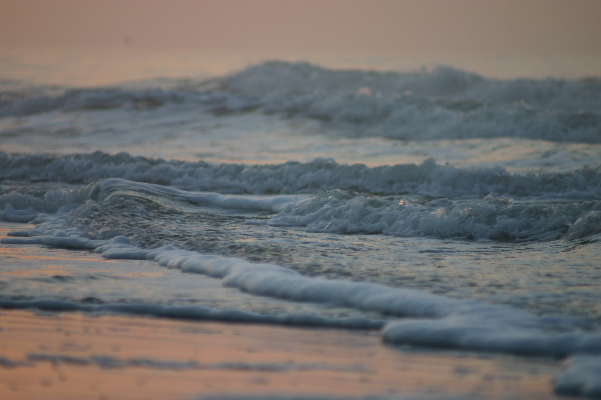
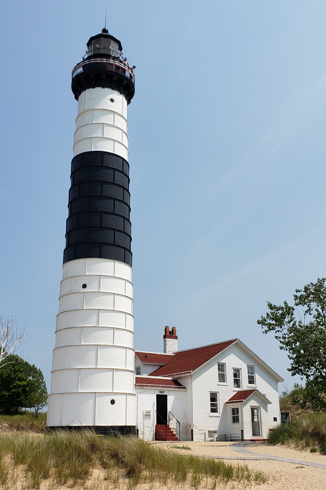

2019-2023
PHOTOGRAPHY

These are some of the photos I’ve taken over the last 5-6 years. I shot them with Canon DSLR cameras and edited some of them in Adobe Photoshop and Lightroom.
I created some of them by greatly adjusting the shutter speed of the camera. I annually go to Grand Haven, Michigan during the winter to take pictures of the pier, lighthouse, and beach. I like to go to other places along the coast and photograph them, some during sunrise. I manually change the f-stop of the camera spending on the subject and goal of the photograph.

